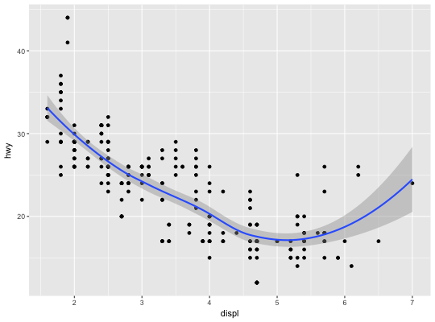
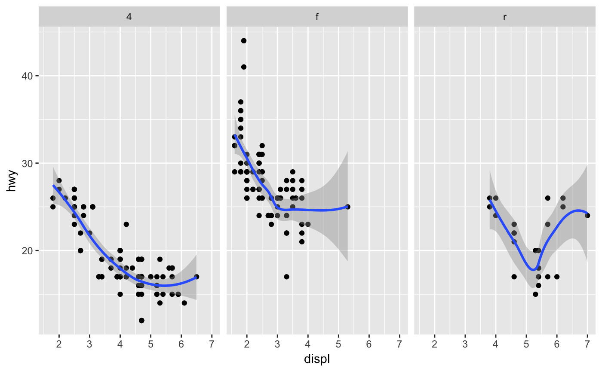
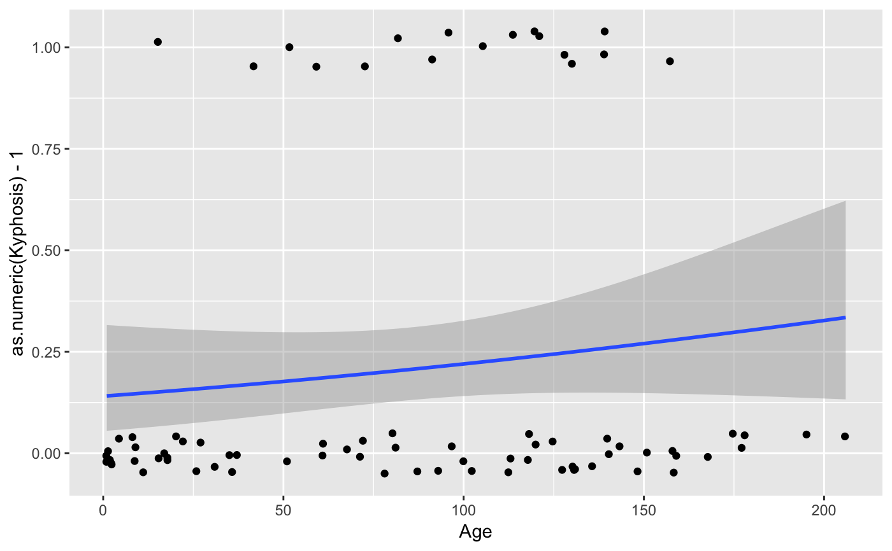
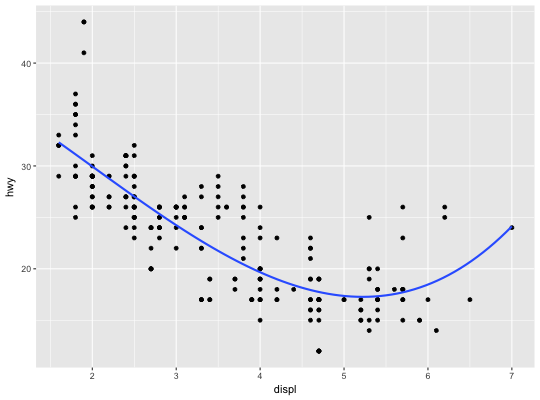
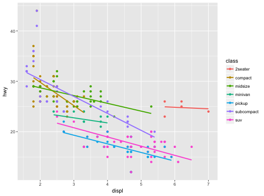
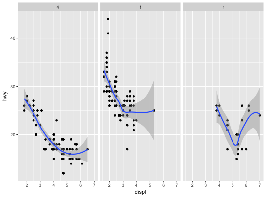

Aids the eye in seeing patterns in the presence of overplotting.
geom_smooth and stat_smooth are effectively aliases: they
both use the same arguments. Use geom_smooth unless you want to
display the results with a non-standard geom.
geom_smooth(mapping = NULL, data = NULL, stat = "smooth", position = "identity", ..., method = "auto", formula = y ~ x, se = TRUE, na.rm = FALSE, show.legend = NA, inherit.aes = TRUE) stat_smooth(mapping = NULL, data = NULL, geom = "smooth", position = "identity", ..., method = "auto", formula = y ~ x, se = TRUE, n = 80, span = 0.75, fullrange = FALSE, level = 0.95, method.args = list(), na.rm = FALSE, show.legend = NA, inherit.aes = TRUE)
aes or
aes_. If specified and inherit.aes = TRUE (the
default), it is combined with the default mapping at the top level of the
plot. You must supply mapping if there is no plot mapping.NULL, the default, the data is inherited from the plot
data as specified in the call to ggplot.
A data.frame, or other object, will override the plot
data. All objects will be fortified to produce a data frame. See
fortify for which variables will be created.
A function will be called with a single argument,
the plot data. The return value must be a data.frame., and
will be used as the layer data.layer. These are
often aesthetics, used to set an aesthetic to a fixed value, like
color = "red" or size = 3. They may also be parameters
to the paired geom/stat.method = "auto" the smoothing method is chosen based on the
size of the largest group (across all panels). loess is
used for than 1,000 observations; otherwise gam is
used with formula = y ~ s(x, bs = "cs"). Somewhat anecdotally,
loess gives a better appearance, but is O(n^2) in memory, so does
not work for larger datasets.y ~ x,
y ~ poly(x, 2), y ~ log(x)FALSE (the default), removes missing values with
a warning. If TRUE silently removes missing values.NA, the default, includes if any aesthetics are mapped.
FALSE never includes, and TRUE always includes.FALSE, overrides the default aesthetics,
rather than combining with them. This is most useful for helper functions
that define both data and aesthetics and shouldn't inherit behaviour from
the default plot specification, e.g. borders.geom_smooth and stat_smooth.method.Calculation is performed by the (currently undocumented)
predictdf generic and its methods. For most methods the standard
error bounds are computed using the predict method - the
exceptions are loess which uses a t-based approximation, and
glm where the normal confidence interval is constructed on the link
scale, and then back-transformed to the response scale.
\aesthetics{geom}{smooth}
See individual modelling functions for more details:
lm for linear smooths,
glm for generalised linear smooths,
loess for local smooths
`geom_smooth()` using method = 'loess'# Use span to control the "wiggliness" of the default loess smoother # The span is the fraction of points used to fit each local regression: # small numbers make a wigglier curve, larger numbers make a smoother curve. ggplot(mpg, aes(displ, hwy)) + geom_point() + geom_smooth(span = 0.3)`geom_smooth()` using method = 'loess'# Instead of a loess smooth, you can use any other modelling function: ggplot(mpg, aes(displ, hwy)) + geom_point() + geom_smooth(method = "lm", se = FALSE)ggplot(mpg, aes(displ, hwy)) + geom_point() + geom_smooth(method = "lm", formula = y ~ splines::bs(x, 3), se = FALSE)# Smoothes are automatically fit to each group (defined by categorical # aesthetics or the group aesthetic) and for each facet ggplot(mpg, aes(displ, hwy, colour = class)) + geom_point() + geom_smooth(se = FALSE, method = "lm")`geom_smooth()` using method = 'loess'